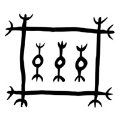

SMT Solvers part three

Pairing workshop
Recurse Center has a workshop in the first week, introduction to pairing.
We all sign up in a google spreadsheet, row labels on the left are people names, column labels are programming language names.
The intersection of person and language can have three values:
- empty
- ok
- preferred
I have the impression that the RC faculty solves this semi-manually, but I don’t really know. In any case, why not hit it with the biggest hammer?
How to phrase the problem?
I started with a list of users like [("shae",0,1,2),("chris",2,1,0)] where the tuple elements were name and language preference.
I arbitrarily decided that a preferred language was 2, an ok language was 1, and empty was 0.
I decided my value proposition would be something like “amount of points removed from the total by subtracting one user from another” and it just didn’t work out. I got stuck and frustrated.
VM allocation is a better example
A few days later I brought this up during a pairing session with Chris Smith.
After giving Chris a hand wavy explanation and a quick tour of the SMT examples, he suggested we take the approach from the Virtual Machine allocation example.
If you read the Dennis Yurichev’s book SAT/SMT By Example VM allocation is in the section on Knapsack problems, and that’s pretty much what we have.
Chris also suggested we change the scoring function to be the sum of the matched part of the pairs.
When Chris and I started out with a list of tuples it worked, but hard to add new languages.
We converted the players to a tuple of (String,[Int]) and it got much easier.
Originally I wanted to return the players and what language matched them, but matching people is more fun because they have something to talk about.
the source!
{-# LANGUAGE TupleSections #-}
module Main where
import Control.Monad (forM_)
import Data.Maybe (fromJust)
import Data.SBV
import Data.SBV.Internals
main :: IO ()
main = do
LexicographicResult res <- optimize Lexicographic allocate
case res of
Satisfiable config model -> print $ filter ((== True) . cvToBool . snd) (modelAssocs model)
_ -> print "Unsatisfiable"
-- per language: 0 "no interest", 1 "ok", 2 "preferred"
-- ("name",[javascript, python, haskell,lisp] )
players :: [Player]
players =
[ ("p1 ", [0, 1, 2, 0]),
("p2 ", [0, 1, 0, 1]),
("p3 ", [0, 2, 0, 1]),
("p4 ", [0, 1, 2, 0]),
("p5 ", [0, 1, 0, 2]),
("p6 ", [0, 1, 0, 0]),
("p7 ", [0, 1, 0, 0]),
("p8 ", [0, 1, 2, 0]),
("p9 ", [0, 1, 0, 0]),
("p0 ", [0, 1, 0, 0]),
("bot ", [0, 0, 0, 0])
]
type Player = (String, Score)
type Score = [Int]
score :: Score -> Score -> SWord32
score s1 s2 = fromIntegral $ maximum $ zipWith scoreLang s1 s2
where
scoreLang a b = (2 * min a b) + max a b
allocate :: Goal
allocate = do
let uPairs = uniquePairs players
pairname ((n1, _), (n2, _)) = n1 <> n2
vars <- sBools $ pairname <$> uPairs
let pairsWithVars = zip uPairs vars :: [((Player, Player), SBool)]
forM_ players $ \(name, _) ->
constrain $ pbMutexed [v | (((n1, _), (n2, _)), v) <- pairsWithVars, n1 == name || n2 == name]
maximize
"best pairs"
(sum [ite v (score s1 s2) 0 | (((n1, s1), (n2, s2)), v) <- pairsWithVars] :: SWord32)
uniquePairs :: [a] -> [(a, a)]
uniquePairs [] = []
uniquePairs (x : xs) = map (x,) xs <> uniquePairs xsthe output!
[("p1 p8 ",True :: Bool),("p2 p5 ",True :: Bool),("p3 p9 ",True :: Bool),("p4 p7 ",True :: Bool),("p6 p0 ",True :: Bool),("best pairs",20 :: Word32)]This means player 1 is matched with player 8, player 2 is matched with player 5, … and the “best pairs” result means the total utility of this combination is 20.
bonus features
The VM allocation example uses pbStronglyMutexed and that surprised us when one of our inputs gave “Unsatisfiable.” After a moment of staring at the code, we realized there were an odd number of players. You can’t pair up every player if you don’t have an even number of players!
Chris suggested we switch to pbMutexed which requires that there is “at most one bit” set, so we wouldn’t have that error again.
I had the idea to add a faculty / bot player with all zero values so they’d be the odd one out unless a player was left without a match.
Normally, the results of this code looked like the somewhat unreadable output below:
shaejoe = False :: Bool
shaebob = False :: Bool
shaebob2 = False :: Bool
shaebob3 = False :: Bool
shaebob4 = False :: Bool
shaebob5 = False :: Bool
joebob = False :: Bool
joebob2 = False :: Bool
joebob3 = True :: Bool
joebob4 = False :: Bool
joebob5 = False :: Bool
bobbob2 = False :: Bool
bobbob3 = False :: Bool
bobbob4 = False :: Bool
bobbob5 = True :: Bool
bob2bob3 = False :: Bool
bob2bob4 = True :: Bool
bob2bob5 = False :: Bool
bob3bob4 = False :: Bool
bob3bob5 = False :: Bool
bob4bob5 = False :: BoolTo improve readability, we pattern matched on the result and only displayed the pairs that were matched, it looks much nicer.
how to improve?
The pairing workshop uses google sheets for signup, and I have the urge to export that as CSV and read that directly into the players datastructure, maybe that’s a short and easy improvement?
At one point we were using Pareto (Just 5) instead of LexicographicResult, that returned the top five solutions. If I can think of how that’s useful, I’ll switch back to that.
The output formatting could be much nicer?
conclusion
If you get excited about SMT solvers, check out the syllabus for Lindsey Kuper’s course, and the book by Dennis Yurichev.
Send me your suggestions for improvement, I want to hear what you think!